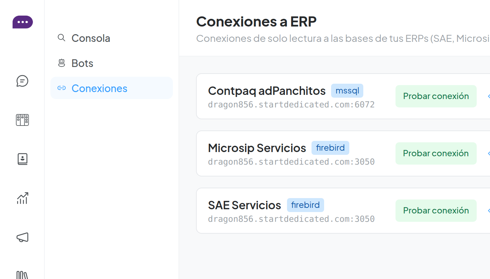
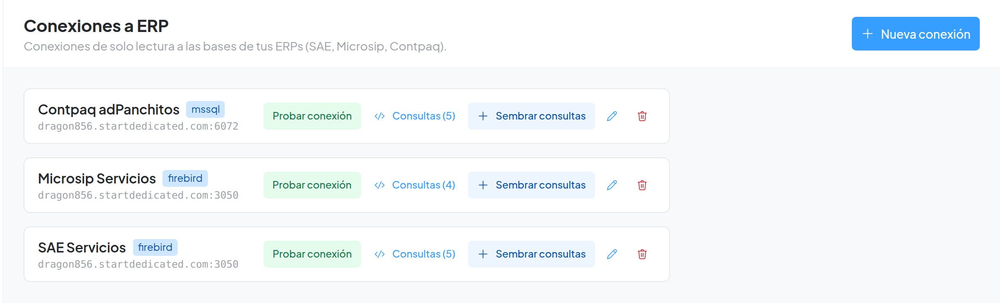
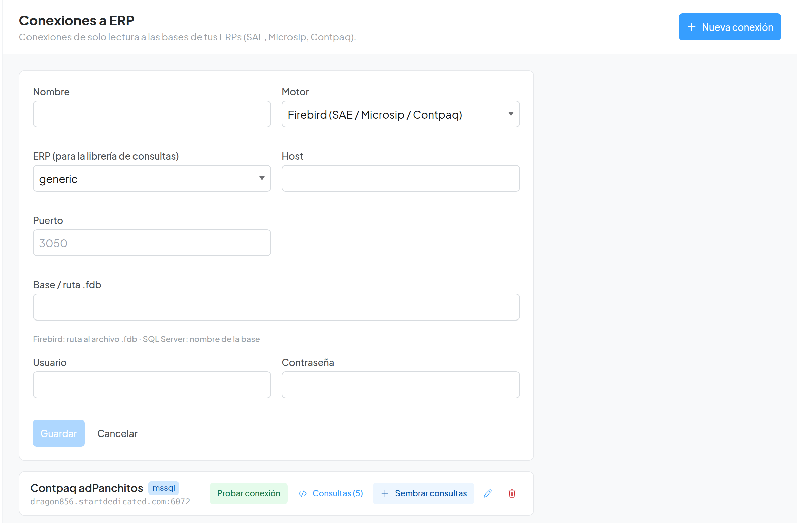
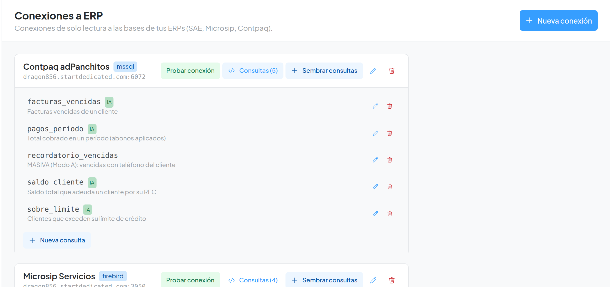
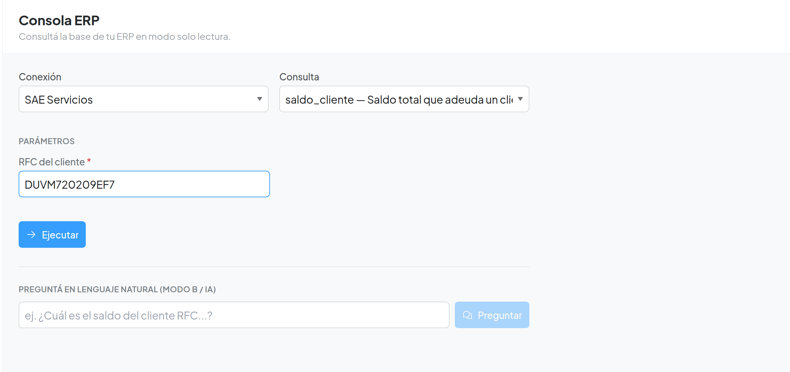
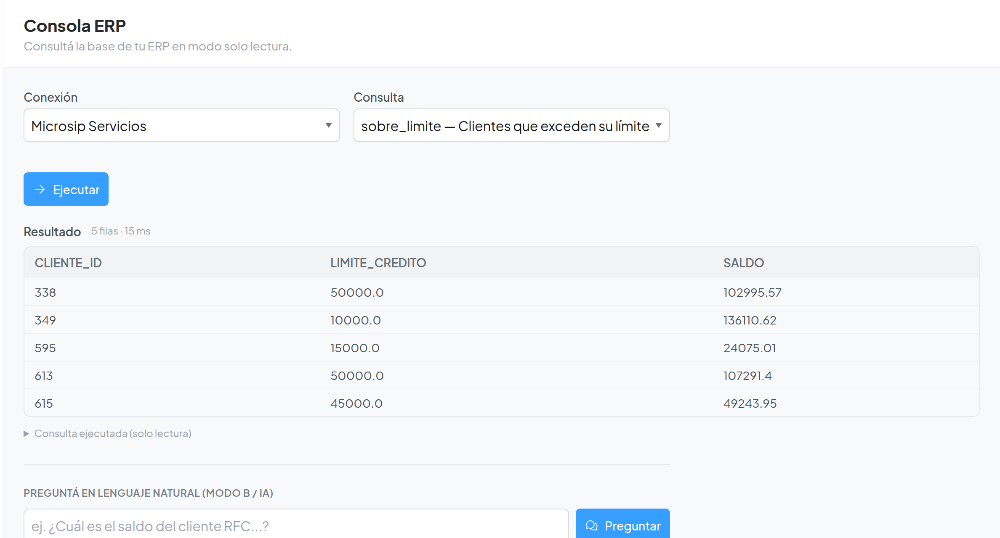
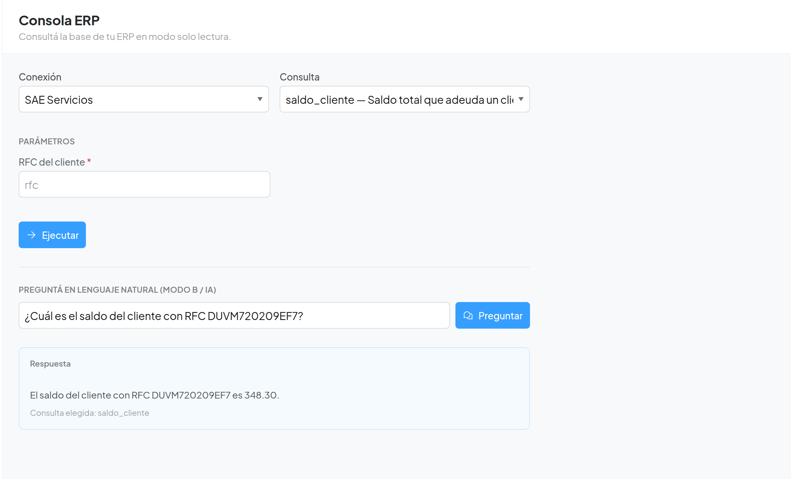
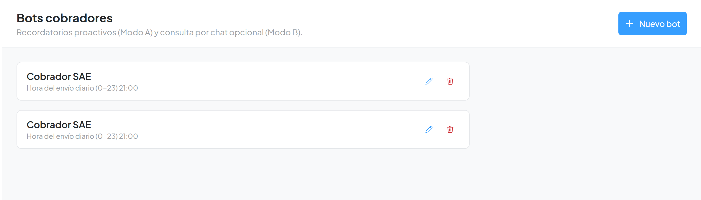
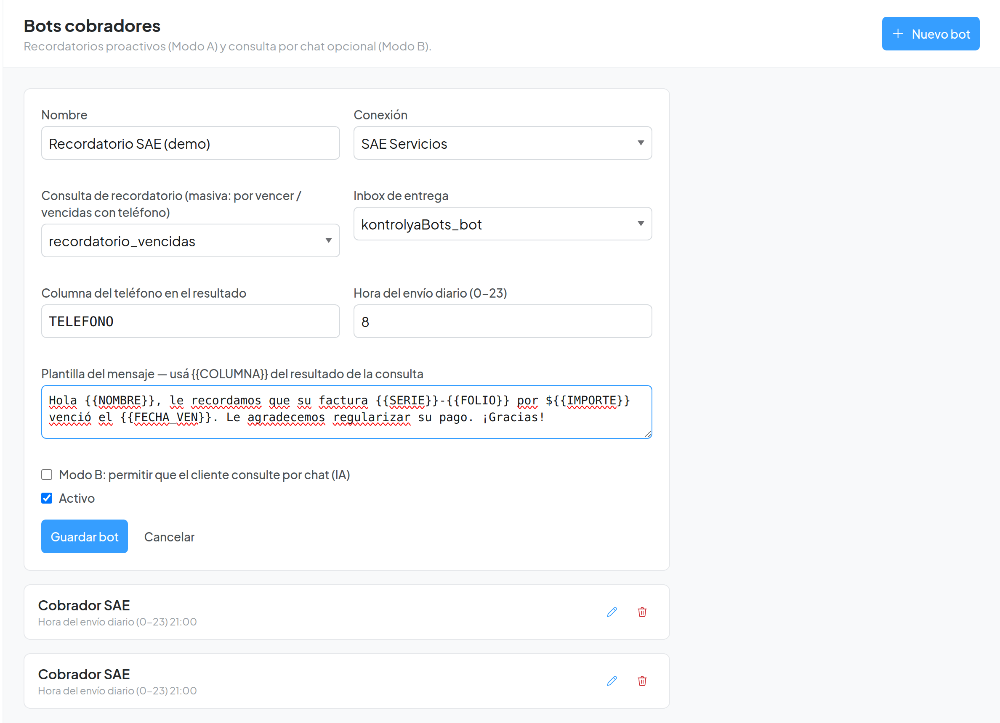
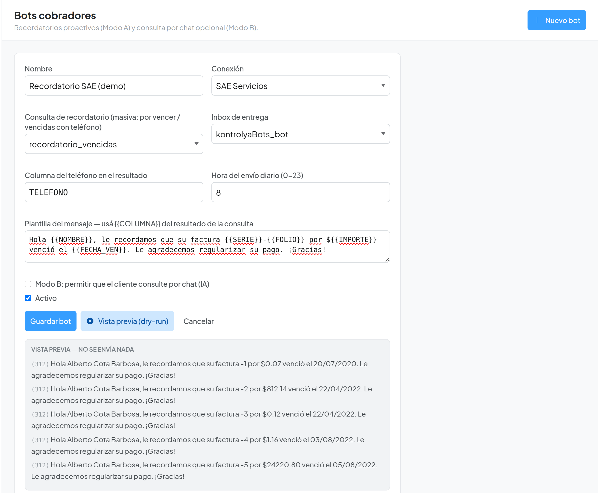

Manual de uso · Cobranza / ERP
El Bot Cobrador de Wintook — consulta las bases de tus ERPs (SAE, Microsip, Contpaq) en modo solo lectura y automatiza la cobranza. Guía paso a paso.
1 Qué es Cobranza / ERP
El módulo Cobranza / ERP conecta Chatwoot con la base de datos del ERP de tu empresa (Aspel SAE, Microsip o CONTPAQi) para consultar información de cartera —saldos, facturas vencidas, pagos, límite de crédito— y usarla en la operación diaria de cobranza.
Ofrece dos formas de trabajo:
- Modo A — recordatorio proactivo: un bot corre una consulta todos los días a una hora fija y envía recordatorios de pago a cada cliente con adeudo, por el inbox que elijas.
- Modo B — consulta por chat (IA): el cliente (o el agente) pregunta en lenguaje natural —"¿cuál es mi saldo?"— y la IA responde consultando el ERP, sin ver nunca el SQL.
SELECT predefinidas. Nunca
escribe ni modifica datos en tu ERP.
2 Cómo acceder y las tres pantallas
El módulo vive en su propio icono en la barra lateral izquierda. Al entrar verás tres opciones en el menú del módulo:

| Pantalla | Para qué sirve | Quién accede |
|---|---|---|
| Consola ERP 🔍 | Consultar el ERP a mano (elegir consulta, llenar datos, ver el resultado) y preguntar en lenguaje natural. | Agente y administrador |
| Bots cobradores 🤖 | Configurar los recordatorios automáticos (Modo A) y activar el Modo B por bot. | Solo administrador |
| Conexiones a ERP 🔗 | Crear y probar las conexiones a las bases de datos de tus ERPs, y administrar sus consultas. | Solo administrador |
3 Conexiones a ERP
Una conexión guarda los datos para llegar a la base de tu ERP (motor, host, puerto, base y credenciales). Es el primer paso y solo la crea un administrador.

Crear una conexión
Pulsa “Nueva conexión” y completa el formulario:

| Campo | Qué poner |
|---|---|
| Nombre | Un nombre descriptivo (p. ej. “SAE Servicios”). |
| Motor | Firebird (SAE, Microsip y Contpaq sobre Firebird) o SQL Server (Contpaq sobre SQL Server). |
| ERP | El sistema (sae, microsip, contpaq o generic). Determina qué consultas se pueden sembrar automáticamente. |
| Sufijo de empresa | Solo para SAE: el número de empresa (p. ej. 01), porque SAE nombra sus tablas con ese sufijo (CLIE01, FACTF01…). |
| Host / Puerto | Dirección del servidor de BD. Puerto típico: 3050 (Firebird) o 6072 (SQL Server, según tu instalación). |
| Base / ruta .fdb | Firebird: la ruta completa al archivo .fdb (p. ej. C:\Microsip datos\SERVICIOS.FDB). SQL Server: el nombre de la base. |
| Usuario / Contraseña | Credenciales de la BD. Recomendado: un usuario de solo lectura (ver Seguridad). |
| Versión TDS | Solo SQL Server. Para instalaciones antiguas (SQL Server 2008 R2 de Contpaq) usa 7.0. |
Probar la conexión
En cada conexión del listado, el botón Probar conexión verifica en el momento que Chatwoot llega a la base. Si todo va bien muestra “Conexión OK”; si no, el error devuelto por la BD.
Sembrar consultas
Si la conexión tiene un ERP definido (SAE, Microsip o Contpaq), el botón Sembrar consultas crea de golpe la librería de consultas verificadas para ese ERP (saldo, vencidas, pagos, límite de crédito y el recordatorio masivo con teléfono). Es idempotente: si vuelves a pulsarlo, no duplica nada.
4 Consultas predefinidas
Cada conexión tiene una lista de consultas. Nunca se escribe SQL libre desde la operación: solo se ejecutan estas consultas predefinidas, cada una con sus parámetros (por ejemplo un RFC). Para verlas o editarlas, en el listado de conexiones pulsa “Consultas (N)”.

Campos de una consulta
- Nombre — identificador corto (p. ej.
saldo_cliente). - Descripción — texto que ayuda a la IA y al agente a elegirla.
- SQL — un
SELECTde solo lectura, con parámetros nombrados como:rfc. - Parámetros — se definen como JSON: clave, etiqueta, tipo y si es obligatorio.
- Límite de filas — tope de resultados que devuelve.
- Formato de resultado —
table,summaryotemplate. - Disponible para el bot IA (Modo B) — si se marca, la IA puede elegir esta consulta al responder por chat.
5 La Consola ERP (consulta manual)
La Consola ERP es donde un agente consulta el ERP a mano, en modo solo lectura. Es la forma de comprobar datos al vuelo mientras atiendes a un cliente.

- Elige la Conexión (tu ERP).
- Elige la Consulta (p. ej.
saldo_cliente). - Llena los Parámetros que pida (los obligatorios llevan *).
- Pulsa “Ejecutar”.
El resultado aparece como tabla, con el conteo de filas y el tiempo que tardó. Puedes desplegar “Consulta ejecutada (solo lectura)” para ver el SQL exacto que se corrió.

6 Preguntar en lenguaje natural (Modo B / IA)
Al final de la Consola hay una caja “Preguntá en lenguaje natural (Modo B / IA)”. Escribe una pregunta como si hablaras con una persona —p. ej. “¿Cuál es el saldo del cliente con RFC DUVM720209EF7?”— y la IA elige la consulta adecuada, la ejecuta y responde en español.

La IA solo puede usar las consultas marcadas como disponibles para el bot IA; nunca inventa SQL ni accede a datos fuera de esas consultas. Debajo de la respuesta se indica qué consulta eligió.
7 Bots cobradores (recordatorios automáticos)
Un bot cobrador automatiza el Modo A: corre una consulta masiva de clientes con adeudo y envía a cada uno un recordatorio por el inbox elegido, todos los días a la hora configurada. Solo lo administra un administrador.

Crear un bot
Pulsa “Nuevo bot” y completa:

| Campo | Qué poner |
|---|---|
| Nombre | Nombre del bot. |
| Conexión | La conexión al ERP que usará. |
| Consulta de recordatorio | La consulta masiva de vencidas/por vencer (la que incluye el teléfono de cada cliente). |
| Inbox de entrega | El canal por el que se enviarán los recordatorios (WhatsApp, Telegram, etc.). |
| Columna del teléfono | El nombre de la columna del resultado que trae el teléfono (p. ej. TELEFONO, TELEFONO1). |
| Hora del envío diario | Hora (0–23) a la que corre el recordatorio cada día. |
| Plantilla del mensaje | El texto del recordatorio. Usa {{COLUMNA}} para insertar valores del resultado (nombre, saldo, folio, fecha de vencimiento…). |
| Modo B | Casilla para permitir que el cliente consulte por chat con IA a través de este bot. |
| Activo | Enciende o apaga el bot sin borrarlo. |
Vista previa antes de enviar
Con el bot guardado, el botón Vista previa (dry-run) muestra cómo quedarían los mensajes reales —con los datos de cada cliente ya sustituidos— sin enviar nada. Úsalo siempre antes de activarlo.

8 Modo A vs Modo B
| Modo A — Recordatorio proactivo | Modo B — Consulta por chat (IA) | |
|---|---|---|
| Quién inicia | El sistema, a una hora fija. | El cliente, escribiendo por chat. |
| Usa IA | No. Consulta fija + plantilla. | Sí. La IA elige la consulta. |
| Para qué | Enviar recordatorios de pago masivos. | Responder “¿cuál es mi saldo?” al instante. |
| Se configura en | Bot cobrador (consulta, inbox, hora, plantilla). | Casilla “Modo B” del bot (por defecto apagada). |
Un mismo bot puede usar ambos modos a la vez.
9 ERPs soportados
| ERP | Motor | Notas |
|---|---|---|
| Aspel SAE | Firebird | Tablas con sufijo de empresa (CLIE01, FACTF01). Requiere indicar el sufijo en la conexión. Teléfono en TELEFONO. |
| Microsip | Firebird | El más normalizado; saldos por SALDOS_CC. Teléfono en TELEFONO1. |
| CONTPAQi | SQL Server / Firebird | Sobre SQL Server 2008 R2 usa TDS 7.0. Teléfono en CCON1TEL. |
Cada ERP trae su librería de consultas verificadas (saldos, vencidas, antigüedad, pagos, límite de crédito y el recordatorio masivo), que se crean con “Sembrar consultas”.
10 Seguridad y buenas prácticas
- Solo lectura. El módulo únicamente ejecuta
SELECT. No hay forma de escribir en el ERP desde aquí. - Sin SQL libre en la operación. Agentes y la IA solo ejecutan consultas predefinidas y parametrizadas; la IA nunca ve ni escribe SQL.
- Usa un usuario de BD de solo lectura en cada ERP. No uses
sysdba(Firebird) nisa(SQL Server) en producción. - Prueba con “Vista previa” antes de activar cualquier bot de recordatorios, para no enviar mensajes por error.
- Las conexiones y bots solo los administra un administrador; la Consola la puede usar cualquier agente.
11 Preguntas frecuentes
No veo el icono de Cobranza / ERP
El módulo puede no estar habilitado para tu cuenta, o no tienes el rol necesario (Conexiones y Bots son solo para administradores). Contacta al administrador.
“Probar conexión” falla
Revisa host, puerto, ruta de la base y credenciales. En Contpaq/SQL Server 2008 R2, asegúrate de poner la versión TDS 7.0. Verifica también que el servidor de BD permita conexiones desde el servidor de Chatwoot.
La consulta no devuelve filas
Comprueba los parámetros (por ejemplo, que el RFC exista tal cual en el ERP). Recuerda que en SAE los indicadores son 'S'/'N', no 0/1.
El Modo B no responde por chat
Confirma que el bot tenga la casilla Modo B activada, que la cuenta tenga la integración de IA (OpenAI) configurada, y que existan consultas marcadas como disponibles para el bot IA.
El recordatorio (Modo A) no se envía
El bot debe estar Activo, con un inbox de entrega, una consulta de recordatorio con teléfono y la columna del teléfono correcta. Usa la vista previa para confirmar que se generan mensajes.